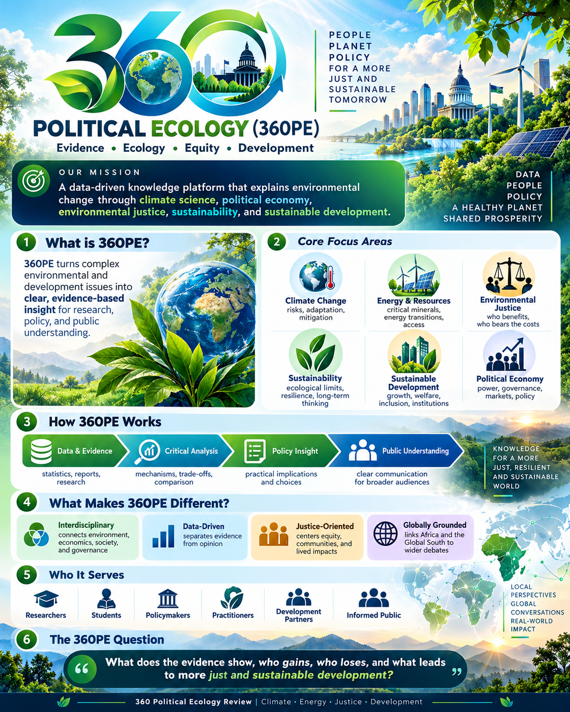

Mission
360 Political Ecology is an independent, research-informed knowledge platform advancing understanding of environmental change through credible data, interdisciplinary analysis and critical policy evaluation.
Evidence. Ecology. Equity. Development.
360PE explores climate change, energy and resource economics, environmental justice, political economy, sustainability and sustainable development, including perspectives from low- and emerging-income economies.

Founder and editor
Amanfo Smart Edward, PhD researches the intersections of environmental policy, energy economics, climate change and sustainable development.
Editorial commitments
Distinguish established evidence from interpretation; disclose uncertainty; cite original sources; identify the date of each article; and correct substantive errors transparently.